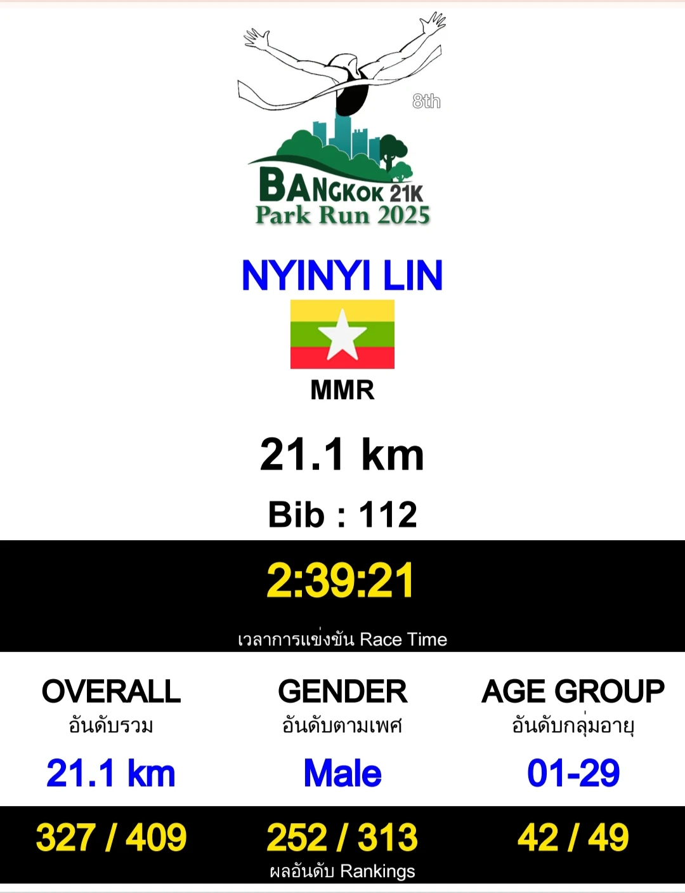
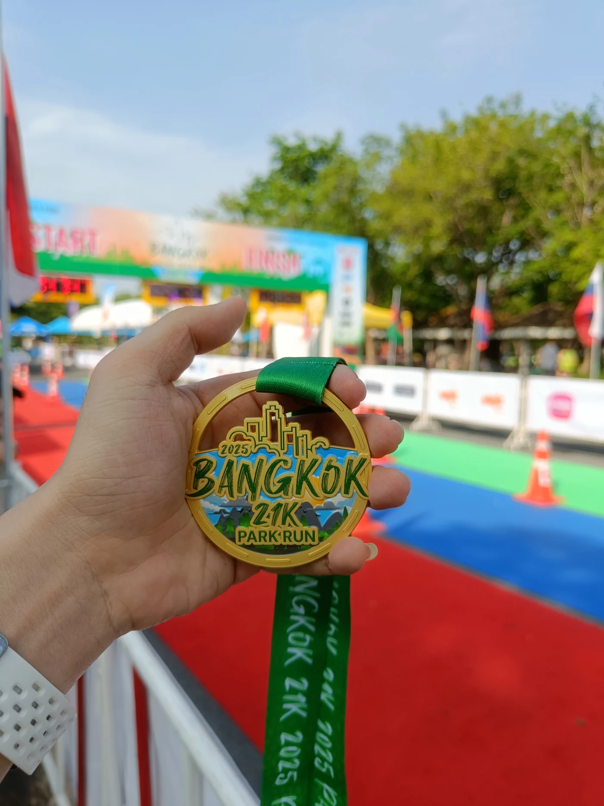
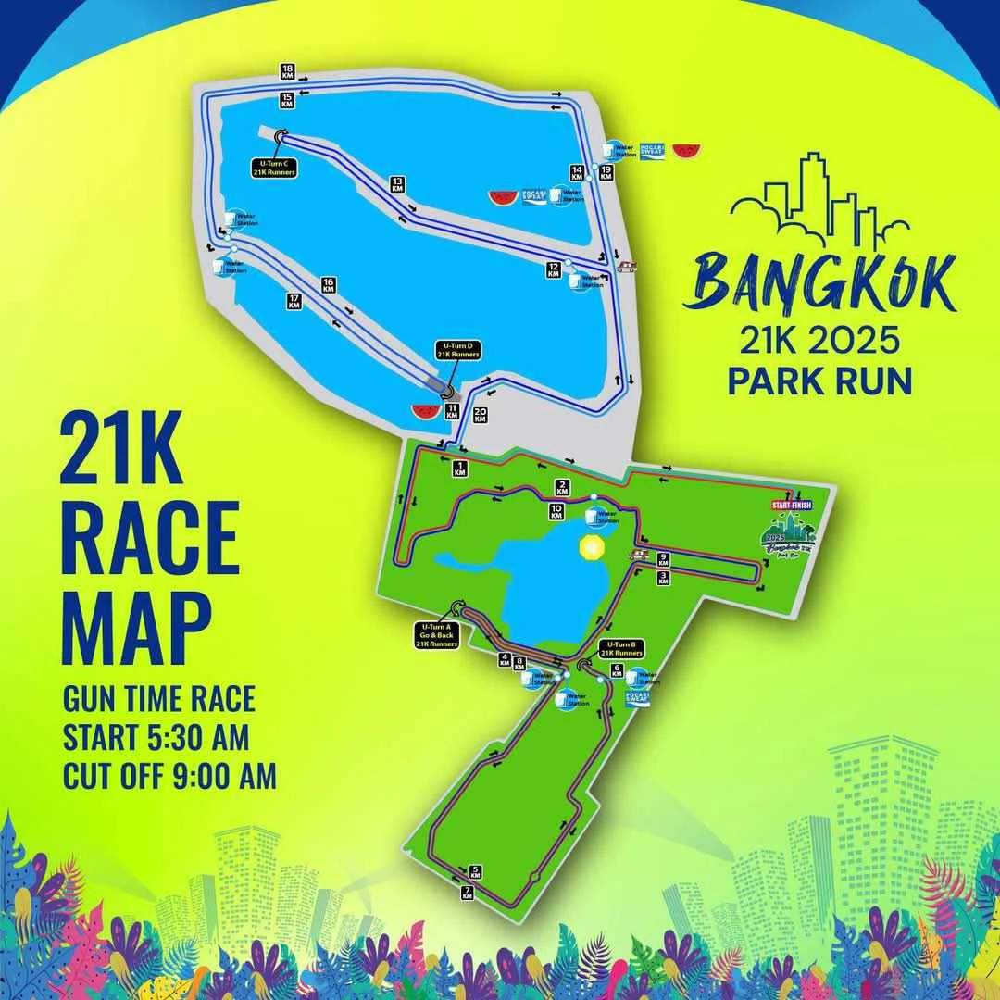

Race 02 · Half-marathon finisher
Bangkok
Park Run.
21.1KM
Official record
The result.
Race day setup
On the day.
Suan Luang
Rama IX Park
Open in Google Maps
Adidas
Supernova Solution
Daily trainer · half-marathon pair
- Overall
- 327 / 409
- Gender
- 252 / 313
- Age group
- 42 / 49
Verified finish
Official proof.
The official timing and rankings from Bangkok 21K Park Run 2025.


What came home
The medal.
My first 21.1-kilometre finish—a half-marathon milestone earned through the parks of Bangkok.
Race 02 / 05The route
A park
half marathon.
The 21K course loops through Suan Luang Rama IX Park and the surrounding park roads.
View the location